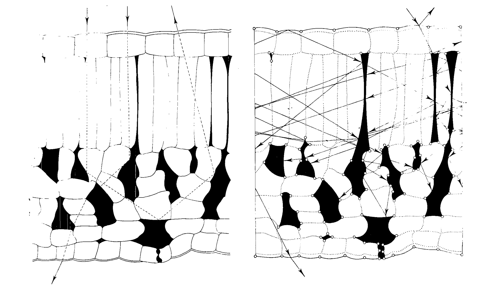

4 Radiative transfer models
Radiative transfer describes the energy exchange through electromagnetic radiation, with varying influences from different chemical compounds (Verrelst and Rivera 2017). Radiative transfer models leverage this physical knowledge by simulating energy transfer from plant leaves or vegetation canopies, enabling the retrieval of vegetation properties from remotely sensed data (Yang et al. 2020). Compared to machine learning approaches, radiative transfer models provide enhanced generalizability and robustness, as they embody a physical process rather than merely extracting a signal from data (Berger et al. 2018).

4.1 Leaf-level radiative transfer models
One of the most prevalent radiative transfer models is Prospect (leaf optical properties spectra), initially introduced by Jacquemoud and Baret (1990). Drawing upon the plate model by Allen et al. (1969), it simulates both reflectance and transmittance of a plant leaf across wavelengths ranging from 400 to 2500 nm. The first version of the Prospect model featured only three input variables: leaf structure (\(N\)), leaf chlorophyll content (\(c_{a+b}\)), and leaf water content (\(c_w\)). Based on that, the model returns the expected reflectance (\(\boldsymbol \rho\)) and transmittance (\(\boldsymbol \tau\)) for each simulated wavelength (\(\lambda\)).
\[f: [N, c_{a+b}, c_w] \in \mathbb R^{3} \rightarrow [\boldsymbol \rho, \boldsymbol \tau] \in \mathbb R^{2\times 2101} \tag{4.1}\]
Over the past four decades, the initial Prospect model has undergone several updates to encompass leaf mass, tannins, anthocyanins, and carotenoids (Fourty et al. 1996, Jacquemoud et al. 1996, Baret and Fourty 1997, Fourty and Baret 1998). For a long period, protein and other non-protein carbon-based compounds were consolidated into a single variable due to the challenge of disentangling them (Jacquemoud et al. 2000).
In a notable development, the newest iteration of the Prospect model, Prospect-Pro, Féret et al. (2021) successfully disentangled these components by splitting the earlier used variable of leaf mass into protein content and other carbon-based content, which include cellulose, lignin, hemicellulose, starch, and sugars. Prospect-Pro was calibrated and validated using the leaf optical properties experiment (Lopex) dataset, which comprises measurements from over fifty plant species collected in northern Italy (Hosgood et al. 1995). This model incorporates seven distinct classes of absorbing compounds, collectively referred to as vector \(\mathbf c\).
\[f: [N, \mathbf c, \alpha] \in \mathbb R^{9} \rightarrow [\boldsymbol \rho, \boldsymbol \tau] \in \mathbb R^{2\times 2101} \tag{4.2}\]
Prospect-Pro also enables the adjustment of the solid angle \(\alpha\) for incident light on the leaf surface, initially determined to be \(\alpha = 60^\circ\) by Jacquemoud and Baret (1990) using a limited dataset. Subsequently, Féret et al. (2008) discovered that \(\alpha = 40^\circ\) was a more accurate value. An overview of the parameters used in Prospect-Pro can be found in table 4.1.
| Abbreviation | Parameter | Unit | |
|---|---|---|---|
| \(N\) | N |
Leaf mesophyll structure parameter | |
\(\mathbf c\) |
CHLCARANTBROWNEWTPROTCBC |
Chlorophyll content Carotenoid content Anthocyanin content Tannin content Equivalent water thickness Protein content (Non-protein) carbon-based constituent content |
\(\mu \text{g cm}^{-2}\) \(\mu \text{g cm}^{-2}\) \(\mu \text{g cm}^{-2}\) \(-\) \(\text{g cm}^{-2}\) \(\text{g cm}^{-2}\) \(\text{g cm}^{-2}\) |
| \(\alpha\) | alpha |
Solid angle for incident light at surface of leaf | \(^{\circ}\) |
The Prospect calculations rely on well-established laws of physics, with the Fresnel equations serving as the foundation. These equations describe the reflection and transmission of electromagnetic radiation between distinct optical media (Fresnel 1821). Both \(s\) and \(p\) polarizations are included in the equations, which necessitate a refractive index \(n\) — assumed to be \(n > 1\) for the leaf and \(n = 1\) for air — and an angle of incidence \(\theta\).
\[t_s = \frac{4\sqrt{1-\sin^2 \theta} \sqrt{n^2-\sin^2 \theta}}{\left(\sqrt{1-\sin^2 \theta} + \sqrt{n^2-\sin^2 \theta}\right)^2} \quad t_p = \frac{4n^2\sqrt{1-\sin^2 \theta} \sqrt{n^2-\sin^2 \theta}}{\left(n^2\sqrt{1-\sin^2 \theta} + \sqrt{n^2-\sin^2 \theta}\right)^2} \tag{4.3}\]
As the focus lies on the transmissivity for diffuse light originating from all angles \(\theta\) between 0 and \(\frac{\pi}{2}\), it is necessary to integrate across all possible angles to obtain the average transmissivity \(\overline{T}\).
\[\overline{T} = \frac{\int_0^{2\pi} d\varphi \int_0^{\alpha} t(\theta,n) \cos \theta \sin\theta d \theta}{\int_0^{2\pi} d\varphi \int_0^{\alpha} \cos \theta \sin\theta d \theta} \tag{4.4}\]
The integration for the special case where the maximum incidence angle \(\alpha\) equals \(\frac{\pi}{2}\) was performed by Stern (1964). Subsequently, Allen (1973) conducted the integration of the average transmissivity \(\overline{T}\) for a generalized angle of incidence \(\alpha\). This approach is currently employed in the Prospect-Pro computation (Féret and de Boissieu 2022a). The expression for average transmissivity is rather complex, as to be seen in equation 4.5. A visual representation of how the average transmissivity varies as a function of the refractive index \(n\) and the angular range \(\alpha\) can be found in figure 4.3, displayed at the bottom.
\[ \begin{aligned} T_s(\alpha, n) = \frac{1}{96}\frac{(n^2-1)^4}{\left[\sqrt{\left(\sin^2 \alpha -\frac{1}{2} (n^2 + 1)\right)^2 -\frac{1}{4} (n^2 - 1)^2} - \sin^2 \alpha +\frac{1}{2} (n^2 + 1)\right]^3} - \\\ \frac{1}{4}\frac{n^4 - 2n^2 +1}{\sqrt{\left(\sin^2 \alpha -\frac{1}{2} (n^2 + 1)\right)^2 -\frac{1}{4} (n^2 - 1)^2} - \sin^2 \alpha + \frac{1}{2} (n^2 + 1)} - \\\ \frac{1}{2} \left( \sqrt{\left(\sin^2 \alpha -\frac{1}{2} (n^2 + 1)\right)^2 -\frac{1}{4} (n^2 - 1)^2} - \sin^2 \alpha + \frac{1}{2} (n^2 + 1) \right) + \\\ \frac{1}{12} \frac{(n^2 - 1)^4}{(n + 1)^6} + \frac{1}{2} \frac{(n^2-1)^2}{(n+1)^2} + \frac{1}{4} (n^2+2n+1) \end{aligned} \]
\[ \begin{aligned} T_p(\alpha, n) = \frac{-2 n^2}{(n^2 + 1)^2} \left[ \sqrt{\left(\sin^2 \alpha - \frac{1}{2} (n^2 + 1)\right)^2 - \frac{1}{4} (n^2 - 1)^2} - \sin^2 \alpha + \frac{1}{2} (n^2 + 1) - \frac{1}{2} (n + 1)^2 \right] - \\\ \frac{2 n^2 (n^2 + 1)}{(n^2-1)^2} \cdot \ln \left[ \sqrt{\left(\sin^2 \alpha - \frac{1}{2} (n^2 + 1)\right)^2 - \frac{1}{4} (n^2 - 1)^2} - \frac{\sin^2 \alpha - \frac{1}{2}(n^2 + 1)}{(n+1)^2} \right] + \\\ \frac{1}{2} n^2 \left\{ \left[ \sqrt{\left(\sin^2 \alpha - \frac{1}{2} (n^2 + 1)\right)^2 - \frac{1}{4} (n^2 - 1)^2} - \sin^2\alpha - \frac{1}{2} (n^2 + 1)\right]^{-1} - \frac{2}{(n + 1)^2} \right\} + \\ \frac{16n^4 (n^4 + 1)}{(n^2+1)^3(n^2-1)^2} \cdot \ln \left[\frac{ 2 (n^2 + 1) \left(\sqrt{\left(\sin^2 \alpha - \frac{1}{2} (n^2 + 1)\right)^2} - \sin^2 \alpha + \frac{1}{2} (n^2 + 1)\right) - (n^2 - 1)^2}{(n^2 + 1)(n + 1)^2 - (n^2-1)^2} \right] + \\\ \frac{16 n^6}{(n^2 + 1)^3} \left[ {2 (n^2 + 1) \left(\sqrt{\left(\sin^2 \alpha - \frac{1}{2} (n^2 + 1)\right)^2} - \sin^2 \alpha + \frac{1}{2} (n^2 + 1)\right) - (n^2 - 1)^2} \right]^{-1} - \\\ \frac{16n^6}{(n^2 + 1)^3\left( (n^2 + 1) (n + 1)^2 - (n^2 - 1)^2 \right)} \end{aligned} \]
\[ \overline{T}(\alpha, n) = \frac{T_s(\alpha, n) + T_p(\alpha, n)}{2 \cdot \sin^2 \alpha} \tag{4.5}\]
In the Prospect-Pro model, reflectance and transmittance depend on multiple variables, as well as numerous fixed, empirically estimated parameters. These parameters encompass the refractive index (\(n\)) and specific absorption coefficients (\(s\)), which all are individually fitted for each absorbing compound in \(\mathbf c\) across a diverse range of plant species. Additionally, these parameters are estimated for every wavelength \(\lambda\) between 400 and 2500 nm. As a result, Prospect-Pro relies on a total of 8 × 2101 = 16’808 empirically estimated internal parameters. With these parameters in hand, the overall absorption coefficient can be computed as follows.
\[k_\lambda = \frac{1}{N} \sum_i c_i s_{i,\lambda} \tag{4.6}\]
Here, \(c_i\) represents the content of the \(i\)th constituent in the vector \(\mathbf c\) (as detailed in table 4.1), and \(s_i\) denotes the specific absorption coefficient of the \(i\)th constituent and the \(\lambda\)th wavelength. Although the computation of reflectance and transmittance is not linear with respect to \(k\), it is still possible to discern the bandwidths in which a particular compound’s presence would have an impact based on the specific absorption coefficients \(s\) displayed in figure 4.3.
Utilizing the overall absorption coefficient \(k\), the transmission for isotropic light \(\varphi\) can be calculated for each wavelength \(\lambda\) with \(k = k_\lambda\) using the upper incomplete gamma function in accordance with the Beer-Lambert law (Lambert 1760, Beer 1852).
\[\varphi = (1 - k) \cdot e^{-k} + k^2 \cdot \Gamma(k) = \\ (1 - k) \cdot e^{-k} + k^2 \cdot \int_k^\infty \frac{e^{-t}}{t} dt \tag{4.7}\]
In the case of Prospect-Pro, the upper incomplete Gamma function \(\Gamma(k)\) is simplified and computed according to Goulet (2016). Using this information, the final equations for transmittance \(\tau\) and reflectance \(\rho\) can be expressed (Equation 4.9). Due to space limitations, the substituting terms \(A, B, C, D, E, F\), and \(G\) are employed (Equation 4.8).
\[\begin{aligned} A = \frac{ \varphi \: \overline T(90, n)} { n^2\left[1 - \varphi^2 \: \left(1 - n^{-2} \: \overline T(90, n) \right)^2\right] } \qquad B = \overline T(90, n) \: A \\[15pt] C = 1 - \overline T(90, n) + \varphi \: B \: \left(1 - \frac{\overline T(90, n)}{n^2}\right) \\[15pt] D = \sqrt{(1 + C + B) \: (1 + C - B) \: (1 - C + B) \: (1 - C - B)} \qquad E = \frac{1 + C^2 - B^2 + D}{2\,C} \\[15pt] F = \frac{1 - C^2 + B^2 + D}{2\,B} \qquad G = F^{N-1} \qquad H = \frac{E \, (G^2 - 1)}{E^2 \, G^2 - 1} \end{aligned} \tag{4.8}\]
\[\rho = 1 - \overline T(\alpha, n) \left[ 1 + \varphi \, A \left(1 - \frac{\overline T(90, n)}{n^2} \right) + \frac{A \, H \, B}{1 - H \, C} \right] \quad \tau = \frac{\overline T(\alpha, n) \, A \, G \, (E^2 - 1)}{(E^2 \, G^2 - 1) \, (1 - H \, C)} \tag{4.9}\]
The impact of distinct compounds on absorption is demonstrated in figure 4.4. This figure vividly portrays the absorption of electromagnetic radiation by proteins in the short-wave-infrared spectrum, specifically within the range of 1500 to 2500 nm wavelength. In contrast to carbon-based compounds, proteins exhibit no absorption in the near-infrared or visible light spectra.
CHL \(\in [10,70]\; \mu\text{g} \: \text{cm}^{-2}\)), (non-protein) carbon-based content (B: CBC \(\in [0,0.02] \; \text{g} \: \text{cm}^{-2}\)), and protein content (C: PROT \(\in [0,0.02] \; \text{g} \: \text{cm}^{-2}\)).4.2 Canopy-level radiative transfer models
The Prospect model is specifically designed to simulate the reflectance and transmittance of an individual leaf. However, simulating the reflectance of an entire canopy proves to be far more intricate. Canopy reflectance is affected by numerous factors such as leaf inclination, solar irradiance angle, viewing angle of the canopy, and the interference of soil reflectance as well as atmospheric effects. To effectively account for these diverse variables, substantial extensions are necessary, which ultimately results in a significantly more complex simulation process. Consequently, this section outlines several approaches for utilizing the Prospect model at the canopy level.
One-dimensional canopy reflectance models
The radiative transfer model Sail (scattering by arbitrary inclined leaves) was one of the earliest models to simulate the bidirectional reflectance of a canopy. Sail makes reflectance a function of both solar incident and viewing angles (Verhoef 1984, 1985). As implied by its name, Sail represents the canopy through the simulation of numerous randomly inclined leaves situated above the soil. These leaves are assumed to be uniformly distributed in space but inclined according to a specific leaf inclination angle distribution function.
The most recent iteration of the Sail model is known as 4Sail. While it simulates the same process as the original version, 4Sail is more numerically robust and optimized for enhanced speed (Verhoef et al. 2007). The parameters used in the Sail model can be found in table 4.2.
| Parameter | Unit | |
|---|---|---|
laiq\(\rho_{\text{soil}}\) \(\alpha_{\text{soil}}\) skyl\(\theta_{\text{s}}\) \(\theta_{\text{v}}\) rAA |
Leaf area index Hot spot parameter Soil reflectance Soil brightness factor Fraction of diffuse illumination Sun zenith angle Viewing (observer) zenith angle Relative azimuth angle between sun and sensor |
\(\text{m}^2 \; \text{m}^{-2}\) \(\text{m} \; \text{m}^{-1}\) \(\%\) \(^\circ\) \(^\circ\) \(^\circ\) |
In order to achieve accurate modelling with the Sail model, specifying the reflectance and transmittance of leaves is crucial. These values can either be measured directly and integrated into the model or derived from the Prospect model’s predictions. The coupling of these models was first accomplished by Baret et al. (1992) following the development of the initial Prospect model. This combined model is known as Prosail, and its latest implementation unifies 4Sail and Prospect-Pro (Jacquemoud et al. 2009). Prosail provides an effective means of extending plant pigment retrieval techniques from leaf-level analysis to canopy-level assessment, thereby enriching the scope of vegetation studies.
The Prosail model simplifies light transport through a canopy into a one-dimensional process, in which light can travel either downwards or upwards. The canopy is assumed to consist of a homogeneous distribution of leaves. This simplification imposes certain limitations on the applicability of Prosail and similar one-dimensional radiative transfer models (Bailey et al. 2020). Although the assumption proves reasonably effective for modelling canopies that can be approximated as a homogeneous mass, such as grass, wheat, or soybeans, it may not be well-suited for more heterogeneous canopies. As a result, the Prosail model is not the most suitable choice for examining crops with intricate canopy structures such as almond trees — alternative models should be considered and explored for these specific applications.
Ray tracing
In order to simulate the impact of a specific three-dimensional canopy structure on the reflectance, a technique called ray tracing is required. Ray tracing is a method for modelling light transport and is widely employed in rendering algorithms to create realistic digital images. It is not the only rendering algorithm, nor is it the fastest, but it tends to deliver the most realistic results (Peddie 2019).
The underlying reason for this is that ray tracing truthfully replicates the behaviour of light, offering a highly accurate simulation of its interactions within various environments. Within an environment containing various objects of interest, single rays of light are simulated, each assigned a specified (spectral) reflectance and transmittance. Each ray of light is represented by a direction and an energy level provided for every simulated spectral band. When a ray of light encounters an object, its direction changes according to a bidirectional reflectance distribution function (BRDF), and its energy level is reduced by multiplying it with the object’s surface reflectance. The ray of light is continuously losing energy, as an object’s reflectance is always \(\leq 1\). Ultimately, the ray either exits the modelled environment or strikes the simulated sensor, contributing to the values of simulated pixels.
Forward path tracing is a technique in which ray tracing originates at the light source and may conclude at the simulated camera. The primary drawback of this approach is that most light rays leave the modelled environment without impacting the simulated image at all. Hence, a more computationally efficient strategy begins at the sensor position, sending light rays into the scene while calculating the appropriate spectral intensity for each individual ray. This process is known as backwards path tracing (Jianbo 2022).
Ray tracing has advanced significantly over the last few decades, particularly due to the improvement efforts of the video game and computer animation industries. The implementation of many tricks such as backwards path tracing has constantly improved the performance of ray tracing algorithms. However, research has primarily focused on methods for increasing algorithm speed (Wyman and Panteleev 2021, Lin et al. 2022). Accurate simulation of optical processes has been of lesser importance, as long as the resulting images appear visually pleasing to humans. Consequently, many ray tracing algorithms developed for computer graphics cannot be directly applied to simulating canopy reflectance (Jianbo 2022).
Three-dimensional canopy reflectance models
Specialized programs are necessary to carry out the ray tracing calculations required for scientific applications. One such program is the Less{.smallcaps} model, specifically designed for simulating forest canopy reflectance. Less (large-scale emulation system for forest simulation) was developed by Qi et al. (2017) in 2017 and has been continuously maintained and updated in subsequent years (Qi et al. 2019, 2022, 2023). The model employs a backward path tracing method to generate large-scale spectral images, ranging from the visible to the thermal infrared spectral domain (Jianbo 2022).
Access to Less is provided through a freely available graphical user interface (GUI), which facilitates the arrangement of three-dimensional objects within a scene and allows for pre-rendering inspection. Each component in the modelled scene, such as leaves, stems, or soil, can be assigned specific optical properties — both reflectance and transmittance — that influence ray tracing. However, all simulated surfaces are assumed to be Lambertian, or perfectly matte, meaning that no bidirectional reflectance distribution function can be implemented for leaves in Less (Qi et al. 2017).
Nevertheless, Less enables the configuration of numerous parameters, including zenith and azimuth angles for both sensor view and solar irradiance, sensor height, cloudiness type, and the desired quality of the produced image.
It is worth noting that Less is not the only model capable of rendering a three-dimensional canopy for scientific purposes. Another example is the ray tracing model Dart (discrete anisotropic radiative transfer), introduced by Malenovskỳ et al. (2013).
4.3 The inversion problem
Thus far, the discussion has centred on radiative transfer models as a method for simulating leaf or canopy reflectance and transmittance, assuming that parameters such as chlorophyll, anthocyanin, or carotenoid content are already known. This is referred to as the forward mode of a radiative transfer model. In some cases, the forward mode of a model might be useful in and by itself, most notably for generating synthetic data. Such data can be used for the intercomparison of other models, to conduct a sensitivity analysis, or even to find new vegetation indices (Cheng et al. 2014, Jin et al. 2014).
However, in many cases, reflectance information is already available, and the objective shifts to identifying the set of parameters that, given a specific model, best explain the observed data. This is referred to as the backward mode of a radiative transfer model. The goal is to discover the inverse function \(f^{-1}\) of the actual model \(f\). \[ f: x \to y \qquad \qquad f^{-1}: y\to x \tag{4.10}\] Upon successful model inversion, the output of the model becomes its input and vice versa. Unfortunately, inverting radiative transfer models such as Prospect is considered mathematically ill-posed and cannot be accomplished algebraically by simply re-writing the equations (Daun 2017). Consequently, alternative methods must be employed to achieve the model inversion. Specifically, the inversion of a radiative transfer model can be achieved through mathematical optimization, look-up tables, or machine learning techniques.
Mathematical optimization
The conventional approach to inverting Prospect-Pro involves mathematical optimization, specifically sequential quadratic programming (Borchers 2022, Féret and de Boissieu 2022a). This iterative optimization algorithm seeks to identify the parameters \(\boldsymbol \theta\) for the model \(f\) in order to minimize a cost function \(J\). Typically, the mean squared error is employed as the cost function, which represents the sum of the squared difference between the model’s predictions (\(f(\boldsymbol {\theta})_\lambda\)) and the observed reflectance and transmittance data. \[ \boldsymbol {\hat \theta} = \arg \min_{\boldsymbol {\theta}} J(\boldsymbol \theta, \boldsymbol \rho) = \arg \min_{\boldsymbol {\theta}} \sum_{\lambda=1}^{n} \left( f(\boldsymbol {\theta})_\lambda - \rho_\lambda \right)^2 \tag{4.11}\] Note that the formula in equation 4.11 only relates to reflectance but works analogous for transmittance as well. The optimization algorithm operates by iteratively running the model, numerically approximating the gradient (\(\nabla_J\)) and the Hessian (\(\mathbf H_J\)) of the cost function \(J\), and utilizing this information to adjust the parameters. This iteration is stopped when the gradient becomes sufficiently small (\(\nabla_J \approx \mathbf 0\)). Inverting the Prospect-Pro model necessitates approximately 132 model runs on average1 to achieve a tolerance level of 10−6.
1 This statement highlights that the average number of model evaluations required for inverting the Prospect-Pro model on the almond dataset was 132. While this number may vary for different datasets, the differences are not expected to be extreme, remaining within the same order of magnitude.
As an alternative to the maximum likelihood estimation effectively executed via the minimization task in equation 4.11, a Bayesian framework could be employed to identify the model’s parameters (Daun 2017). This method requires information on the prior distribution of the parameter to compute the posterior probability distribution. Although it is computationally more demanding than the maximum likelihood estimation, it offers the advantage of producing credibility intervals for the parameters based on their joint distribution. For instance, Zhang et al. (2005) and more recently Shiklomanov et al. (2021) employed a Bayesian calibration method to invert the Prosail-2 and Prospect-5 models, respectively. Both teams utilized a Markov Chain Monte Carlo (MCMC) algorithm to achieve this inversion.
There are three primary drawbacks associated with employing mathematical optimization as an inversion technique for radiative transfer models. The first drawback concerns the feasibility of the approach, which diminishes as the computational cost for a single evaluation of the model becomes too large. This typically occurs when the radiative transfer model grows increasingly complex and computationally demanding, thereby reducing the efficacy of mathematical optimization as an inversion method. The second disadvantage emerges when handling a substantial number of observations that necessitate individual parameter retrieval. In these instances, mathematical optimization loses its effectiveness, as the information obtained from inverting the model for one observation cannot be utilized for another. The final concern involves the risk of becoming trapped in a local minimum, contingent upon the selection of initial parameters. If these limitations prove to be insurmountable, it is prudent to explore alternative solutions such as look-up tables or machine learning techniques, which might offer greater efficiency and effectiveness in addressing such challenges. Consequently, for the inversion of more intricate models like Less, mathematical optimization is not the most suitable approach.
Look-up tables
Look-up tables serve as a particularly valuable model inversion technique when the model in question is computationally expensive, yet its results can be cached easily (Selan 2005). Typically implemented as a fixed-size array, a look-up table consists of elements, each of which corresponds to a specific set of parameters. In the case of Prospect-Pro, these elements represent the combined reflectance and transmittance data. This structure enables relatively rapid data access; however, it also necessitates pre-calculation and storage of the entire look-up table, encompassing all possible parameter combinations (Berger et al. 2018).
The primary disadvantage of look-up tables is the potentially extensive time required for pre-calculating all elements, as well as the necessity of accessing the entire table — which may represent an exceptionally large data structure — for making predictions. It is important to highlight that the data within look-up tables often displays a high degree of collinearity. As a result, a machine learning model can be trained on the look-up table, significantly reducing its size, and thus facilitating the distribution of the inverted model and also the inference process (Verrelst et al. 2016).
Model inversion via machine learning
Inverting models through machine learning can be achieved by first generating a synthetic data set using the radiative transfer model, and then training a machine learning model on that synthetic data set. In this regard, artificial neural networks have gained particular prominence. As the number of observations rises, neural networks tend to outperform other machine learning models. Given the synthetic nature of the data, there is virtually no constraint on the number of observations (Kimes et al. 2000, Verger et al. 2011). Moreover, artificial neural networks offer the advantage of producing relatively quick predictions during the inference stage once they are trained. For instance, the canopy level radiative transfer model Prosail has been successfully inverted for crop trait retrieval using neural networks (Verger et al. 2011), but also using random forest regression (Doktor et al. 2014).
Verrelst et al. (2015) refer to machine learning models that approximate the inverse of a radiative transfer model as emulators. The authors argue that the most significant advantages of emulators are their ability to interpolate effectively in regions where the radiative transfer model has not been executed and their rapid prediction capabilities compared to methods like look-up tables.
{kind=link}